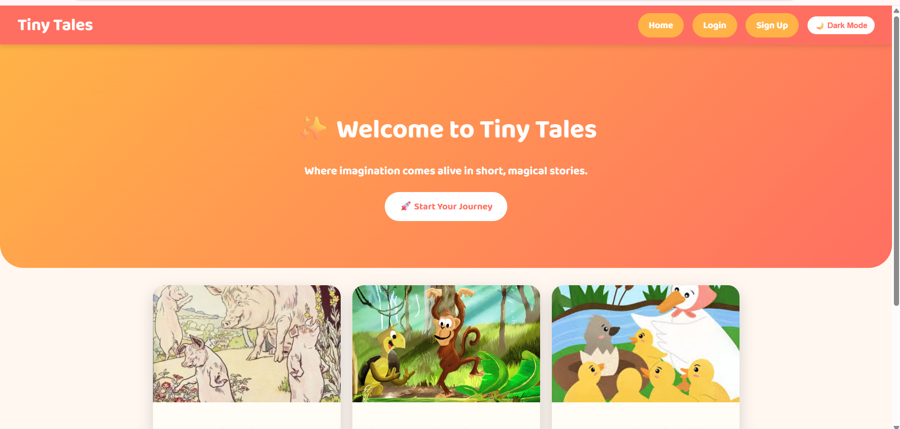
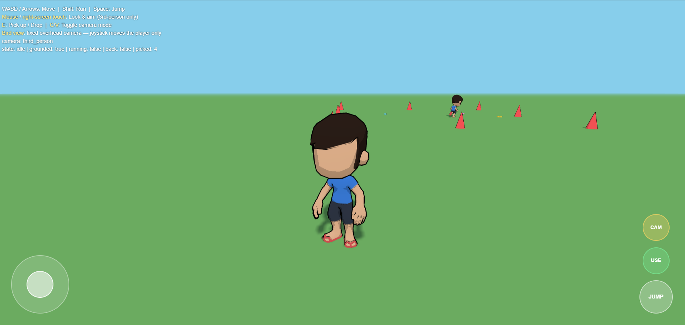

Figma
BEGINNER TO INTERMEDIATEDesigning interfaces, creating prototypes, and organizing reusable components.
HELLO, I'M
Aspiring UI/UX Designer
I am a fourth-year BSIT student at Cebu Eastern College, Incorporated, passionate about creating intuitive, visually appealing, and user-friendly digital experiences. I enjoy exploring web design, building websites, and turning ideas into meaningful user experiences.
01 / ABOUT
I believe good design is more than just appearance. It should be simple, useful, accessible, and centered on the needs of the user. My goal is to create clean and intuitive interfaces that make digital experiences easier and more enjoyable for everyone.
I am a fourth-year Bachelor of Science in Information Technology student at Cebu Eastern College, Incorporated. I am interested in UI/UX design and web development, particularly in designing interfaces that are attractive, accessible, and easy to use. I am continuously learning and improving my technical and creative skills through academic activities and projects.
UI/UX design, website design, exploring modern web interfaces, learning new technologies, and discovering creative design ideas.
Creativity, attention to detail, willingness to learn, problem-solving, and adaptability.
Designing website layouts in Figma, exploring design inspiration, watching tutorials, and learning new digital skills.
To become a professional UI/UX Designer who creates user-friendly, accessible, and visually appealing digital experiences. I aim to improve my design and front-end development skills while building a strong portfolio of real-world projects.
02 / SKILLS
Designing interfaces, creating prototypes, and organizing reusable components.
Creating webpage structures using HTML elements and semantic tags.
Styling web pages with layouts, colors, typography, and responsive design.
03 / PROJECTS
.png)
IntelliView is an AI-driven virtual interview coaching system designed to support interview readiness among fourth-year College of Information Technology students at Cebu Eastern College, Incorporated. The system provides virtual interview practice, analyzes selected verbal and non-verbal communication indicators, and offers interview readiness assessments and personalized recommendations.

A web development practice project using Django, Python, and a database to explore the development of a structured web application.

Bato is a popular Filipino street game where players take turns throwing their slippers (tsinelas) to knock down an empty tin can guarded by a designated player called the tayà (it).
04 / EDUCATION
Cebu Eastern College, Incorporated
05 / CAREER GOALS
My goal is to develop my skills in UI/UX design and front-end development, create meaningful digital experiences, and continue learning the design principles and technologies needed to build user-friendly websites and applications.
06 / CONTACT
I'm always interested in learning, collaborating on projects, and connecting with people who share an interest in technology and design.
Email Me ↗